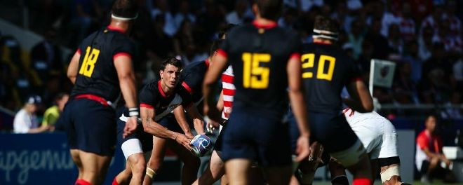
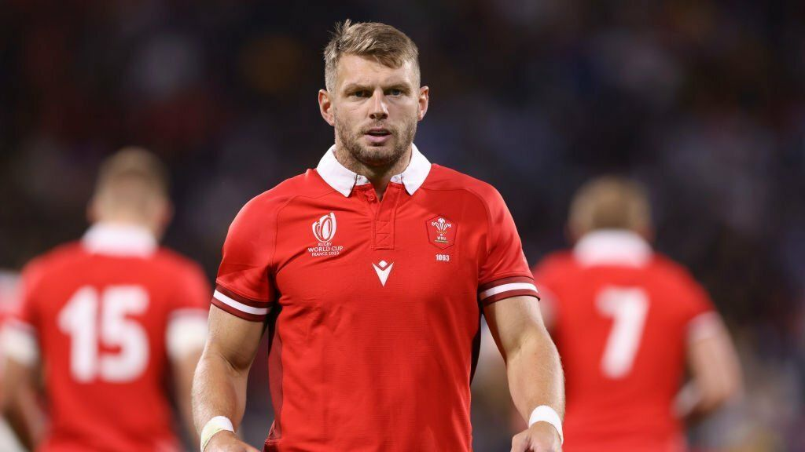
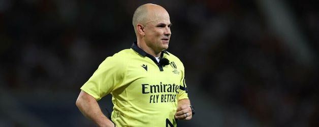
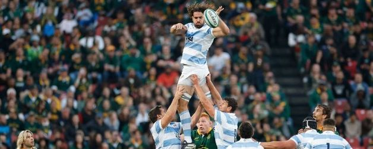
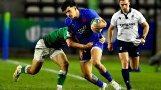
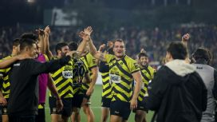
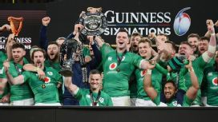
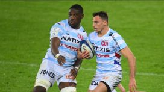

Los pumas ya conocen a los arbitros para el partido con Gales
World Rugby designó a las autoridades para todos los cruces de cuarto de final del mundial

Gales y ¿3 posibles bajas para enfrentar a los Pumas?
Leer más

¿Cómo les fue a Los Pumas cuando fueron dirigidos por Jaco Peyper?
Leer más

Los Pumas anunciaron al reemplazante de Pablo Matera para lo que resta del Mundial
Los números de Lucas Paulos con Los Pumas, el reemplazante de Pablo Matera
El segunda línea se sumó al seleccionado argentino para lo que resta de la Copa del Mundo.
Leer másSuper Rugby Pacific: fixture, resultados y posiciones
Todos los duelos de la competencia neozleandesa
Leer más

El fixture completo del Mundial M20 de Sudáfrica 2023
El certamen se puede seguir en vivo en Star +
Leer más

Súper Rugby Américas 2023: Fixture, resultados y posiciones
Todos los duelos de la competencia Sudáfrica
Leer más

Seis Naciones 2023: resultados y posiciones finales del torneo
Finalizó el certamen más antiguo de seleccionados compuesto por Inglaterra, Francia, Gales, Escocia, Italia y Francia.
Leer más

Top 14 - Calendario y resultados
Todo lo que se disputó y lo que queda por jugarse en el torneo galo
Leer másPremiership - Calendario y resultados
Todas las fechas disputadas y las que quedan pendientes del torneo británico que se vio afectado por el parate mundial.
Leer másLos pumas ya conocen a los arbitros para el partido con Gales
World Rugby designó a las autoridades para todos los cruces de cuarto de final del mundia
Leer más